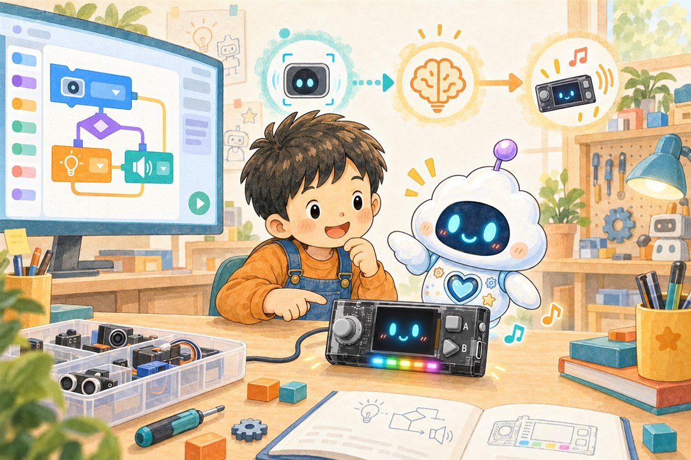

你好，CyberPi！
从屏幕显示开始，学习顺序结构，完成第一个可运行程序。
团团和点点在 CyberPi 上一步步学习积木编程：从屏幕显示、灯光声音，到事件循环、条件变量，再到自制积木和AI语音。每课都在真实设备上运行验证。

先了解本课会用到的积木分类和功能
按步骤连接积木，在 mBlock 中完成程序
把程序烧录进设备，观察灯光、屏幕和声音
从屏幕显示开始，学习顺序结构，完成第一个可运行程序。
用光线和声音两个条件实现自动判断，感受程序如何感知环境。
连接网络，让 CyberPi 用语音合成朗读文字，体验 AI 语音能力。
每课先认识本课要用的积木分类和它们的功能
从顺序到事件、循环、条件、变量、自制积木，递进式学习
程序上传到 CyberPi，灯光、屏幕、声音和传感器全部真实运行
每课一个动手挑战 + 随堂问答，答对点亮勋章